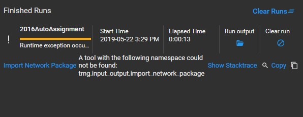
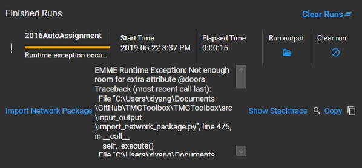
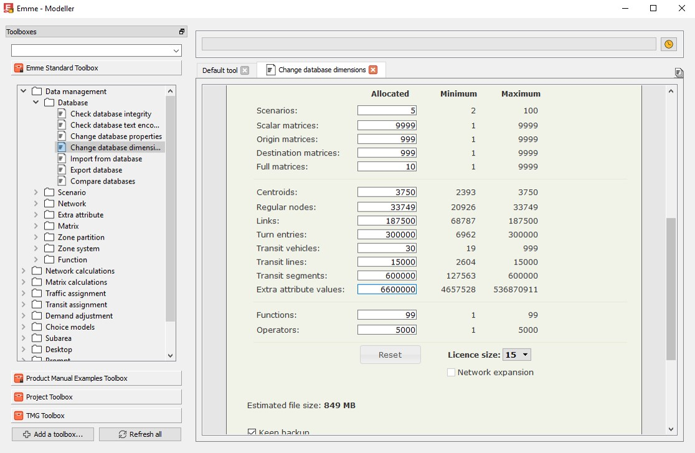
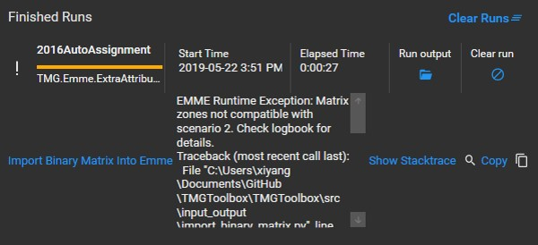
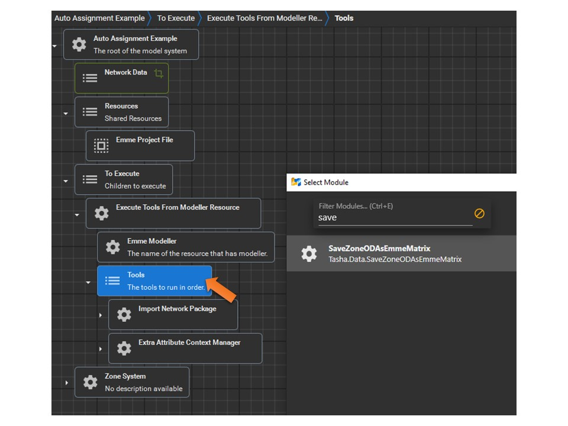
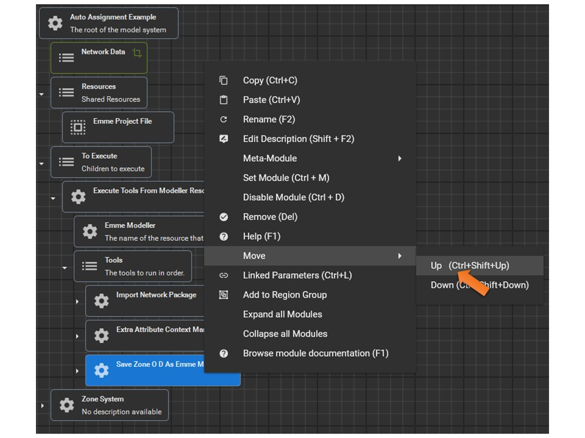
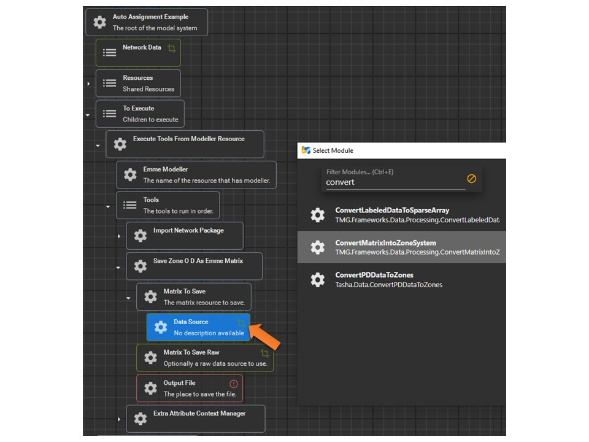
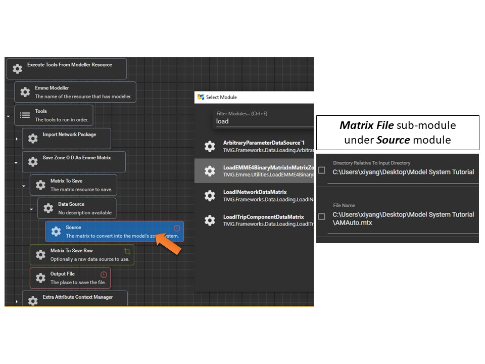
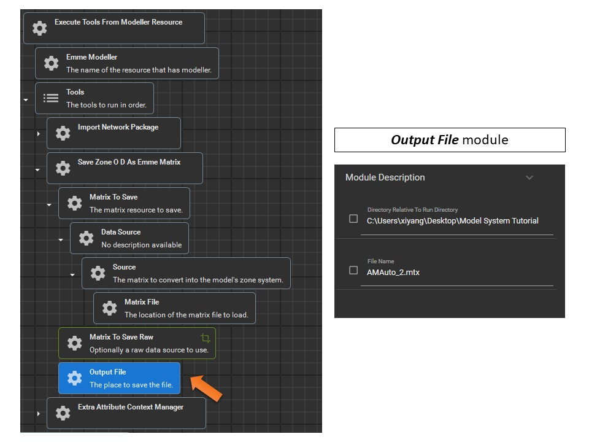
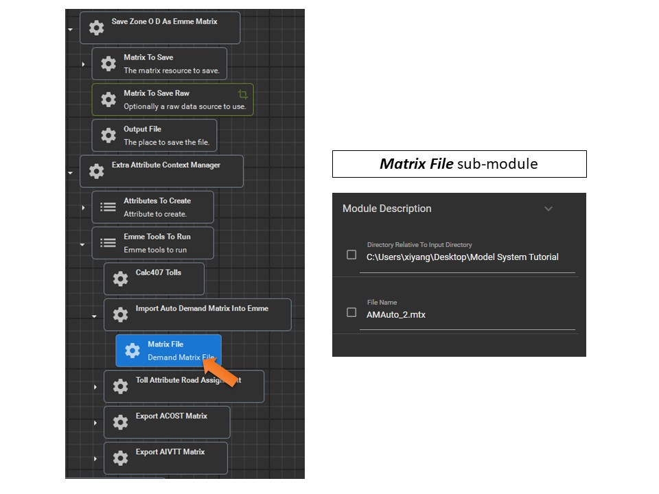

Frequently Asked Questions
Q1) A tool could not be found

You will need to add the TMG toolbox to the target Emme project: How to Add TMG Toolbox?
Remember to save the project setting once you are done with the toolbox add-in.
Q2) Not enough room for extra attributes

You will need to increase the number of Extra Attribute Values in Emme Modeller:

Q3) Matrix zones not compatible with scenario

You will need to change the model system by adding and modifying modules in order to convert the matrix into your zone system.
Step 1: Add a new module to the Tools under To Execute

Step 2: Move the new module up
XTMF executes the modules in order, hence we need to convert the matrix before loading it into Emme.

Step 3: Choose "Resource" for Matrix To Save, and "ConvertMatrixIntoZoneSystem" for Data Source

Step 4: Choose "LoadEMME4BinaryMatrixInMatrixZoneSystem" for Source and Enter the information for the Matrix File sub-module

Step 5: Specify the name of the converted matrix (e.g., AMAuto_2.mtx)

Step 6: Remember to change the Matrix File under Extra Attribute Context Manager module
This is to use the newly converted matrix instead of the original matrix. (Note: Enter the name of the newly converted matrix rather than choosing one since it does not exist yet.)
